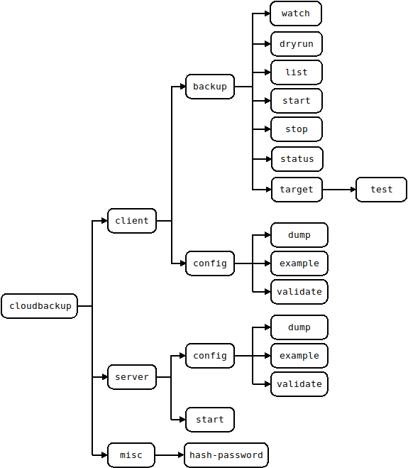
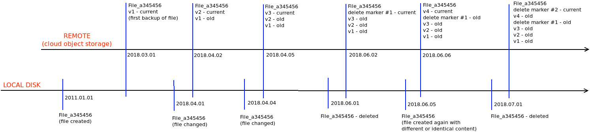

Overview
There is only one binary which can be started as a server or which can be used as a CLI client. In server mode this is the actual backup engine while the CLI's purpose is only to interact with the backup engine and give it instructions.
When running in server mode it requires a configuration file and also a set of static web assets which it uses for serving documentation or for service the static parts of a web UI.
Command Stucture
The command and its main options are depicted below. Command line parameters are supported and can be discovered using the --help option. For example:
$ cloudbackup client backup dryrun --help
Usage:
cloudbackup [OPTIONS] client backup dryrun [dryrun-OPTIONS] job_name
Help Options:
-h, --help Show this help message
[dryrun command options]
-c, --configfile= Client configuration file expected to be in YAML format and have .yml or .yaml extension. If unspecified then the default is to attempt to use $HOME/.cloudbackup.yaml on Linux or Unixes and %HomeDrive%%HomePath% on Microsoft Windows
-u, --username= Username to use when connecting to the server. If not specified then an attempt will be made to use environment variable CLOUDBACKUP_CLIENT_USERNAME followed by an attempt to use the command line specified configuration file (if not specified then
a configuration file will be searched at the default location)
-p, --password= Password to use when connecting to the server. If not specified then an attempt will be made to use environment variable CLOUDBACKUP_CLIENT_PASSWORD followed by an attempt to use the command line specified configuration file (if not specified then
a configuration file will be searched at the default location)
-a, --address= Address to use when connecting to the server. The format expect is one of 'https://1.2.3.4:8443' or 'http://127.0.0.1:8080'. If not specified then an attempt will be made to use environment variable CLOUDBACKUP_CLIENT_ADDRESS followed by an
attempt to use the command line specified configuration file (if not specified then a configuration file will be searched at the default location)
-d, --debug Set logging to debug. WARNING! Secrets and passwords will be shown when using log level debug
--jsonlog Set logging to JSON. Defaults to plaintext
--json If the operation is successful then print JSON responses as they are received from server. If this option is not specified then the response is processed and the output is a plaintext table followed by a summary at the end.
[dryrun command arguments]
job_name: Name of the backup job to dry run. This needs to match a backup job as defined in the configuration of the server

Backup Target(Object Store) Types
aws_s3
Only files gets sent to the object store.
Directories and symlinks have their properties stored in the database only as there is no need to upload them to the object store. Despite the fact that AWS S3 does not have the concept of a directory, when using the AWS S3 Console (web interface) you will be presented with a folder structure which is deduced from the path of stored items.
For a given backup, according to the "prefix" setting of "applications/finance/srv01-east.foo.bar" in the configuration
file for that backup section, you will end up with the following paths in the S3 bucket:
- backed up files being stored under "applications/finance/srv01-east.foo.bar/data/"
- the database used by the backup software and also a version of the configuration file (which has secrets stripped
out) stored in "applications/finance/srv01-east.foo.bar/metadata/"
Any alteration or change to the above structure or to the files stored may lead corruption of the backup. Otherwise, it is safe to read the data and to manually download any file which has been backed up. Given that versioning is used, in order to manually retrieve a previous version of a given file, you will have to enable "show previous versions" in the AWS S3 console.
Requirements for the S3 bucket configurations:
- versioning must be enabled
- MFA Delete must be disabled
- static website hosting must be disabled
- the credentials provided to the backup software must grant access for:
- checking if versioning is enabled (s3:GetBucketVersioning IAM permission)
- checking if static website hosting is enabled (S3:GetBucketWebsite IAM permission)
- uploading items under the configured prefix (s3:PutObject IAM permission)
- retrieving items under the configured prefix. Both the current version and specific versions must be allowed for retrieval (s3:GetObject and s3:GetObjectVersion IAM permissions)
- deleting items under the configured prefix. Both the current version and specific versions must be allowed for deletion (s3:DeleteObject and s3:DeleteObjectVersion IAM permissions)
It is recommended that the S3 bucket is configured with a lifecycle rule which deletes dangling parts from multipart uploads which are older that several days (assuming that a backup job run takes significantly less than the configured period of the lifecycle rule)
gcp_storage
Only files gets sent to the object store.
Directories and symlinks have their properties stored in the database only as there is no need to upload them to the object store.
For a given backup, according to the "prefix" setting of "applications/finance/srv01-east.foo.bar" in the configuration
file for that backup section, you will end up with the following paths in the GCP storage bucket:
- backed up files being stored under "applications/finance/srv01-east.foo.bar/data/"
- the database used by the backup software and also a version of the configuration file (which has secrets stripped
out) stored in "applications/finance/srv01-east.foo.bar/metadata/"
Any alteration or change to the above structure or to the files stored may lead corruption of the backup. Otherwise,
it is safe to read the data and to manually download any file which has been backed up. Given that versioning is used,
in order to manually retrieve a previous version of a given file, you will have to use
gsutil or a third party GCP storage browser as the Google Cloud Console
does not show previous versions of an object.
azure_blob
Only files gets sent to the object store.
Directories and symlinks have their properties stored in the database only as there is no need to upload them to the object store.
For a given backup, according to the "prefix" setting of "applications/finance/srv01-east.foo.bar" in the configuration
file for that backup section, you will end up with the following paths in the Azure Blob Storage container (bucket):
- backed up files being stored under "applications/finance/srv01-east.foo.bar/data/"
- the database used by the backup software and also a version of the configuration file (which has secrets stripped
out) stored in "applications/finance/srv01-east.foo.bar/metadata/"
Any alteration or change to the above structure or to the files stored may lead corruption of the backup. Otherwise, it is safe to read the data and to manually download any file which has been backed up.
versioning
Because the Azure Blob Storage container (referenced as "bucket" in the configuration and some of the log messages)
does not natively support versioning each stored file will have a version identifier appended to the file name. For
example for a given file called description.pdf, when backed up for the first time, in the Azure Blob Storage container
the file will appear as description.pdf.v1 where v1 is the appended version. A new version of the file being backed
up will lead to a .v2 append (resulting in description.pdf.v2) and so on.
